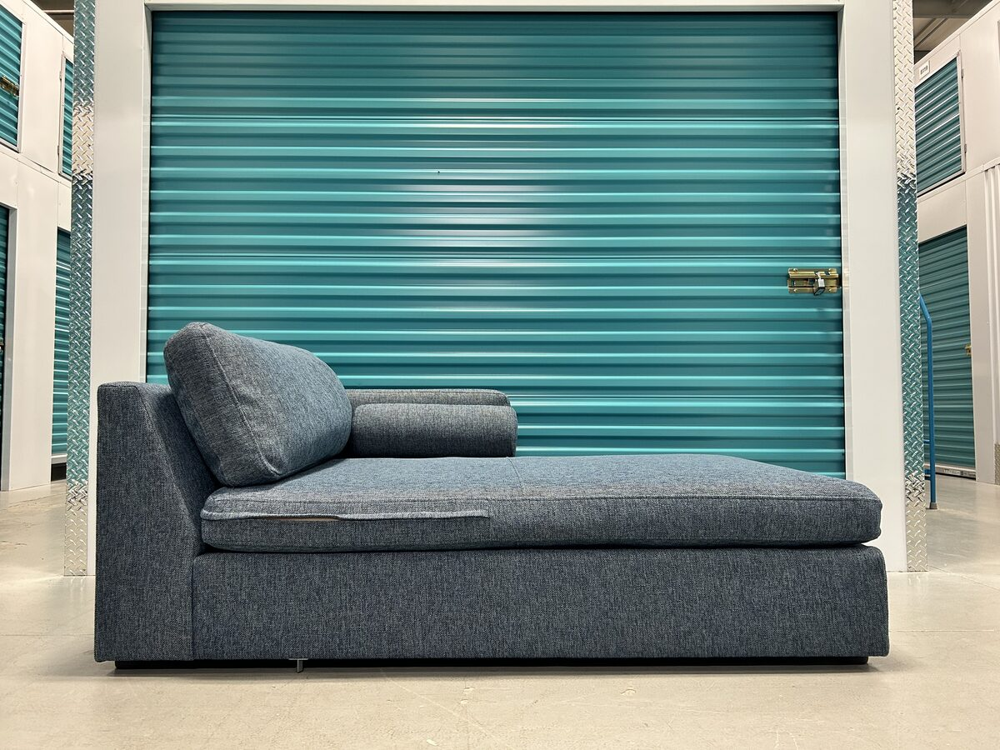
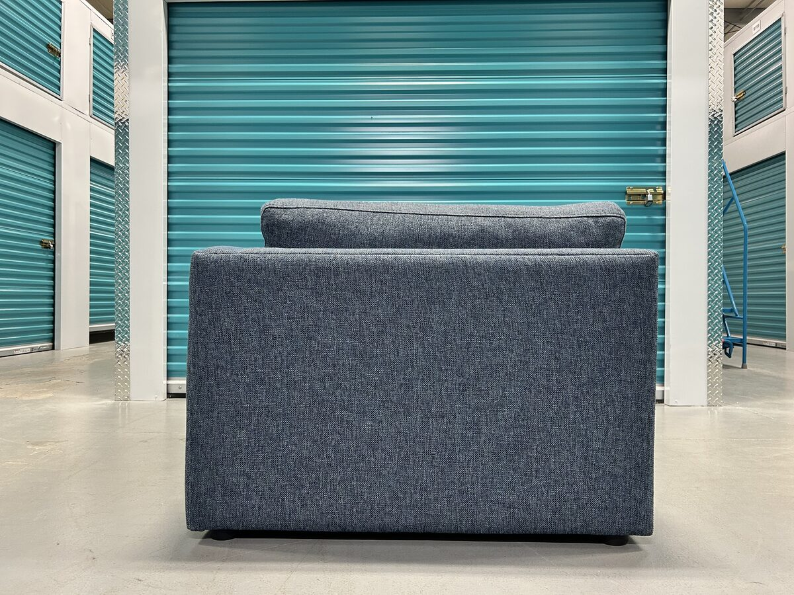
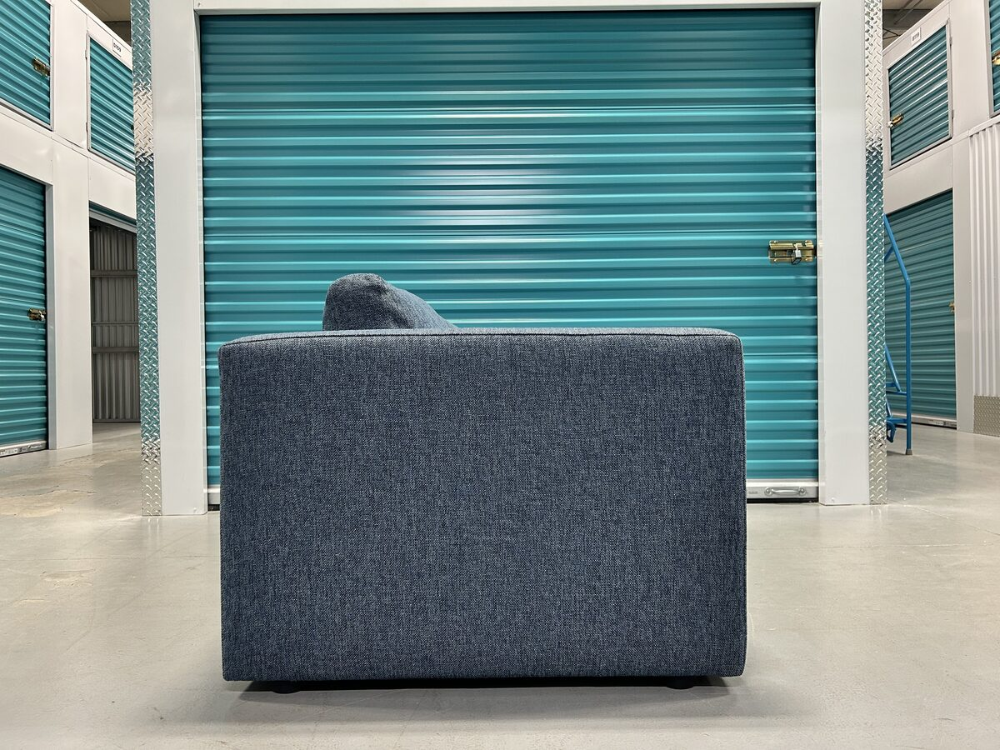
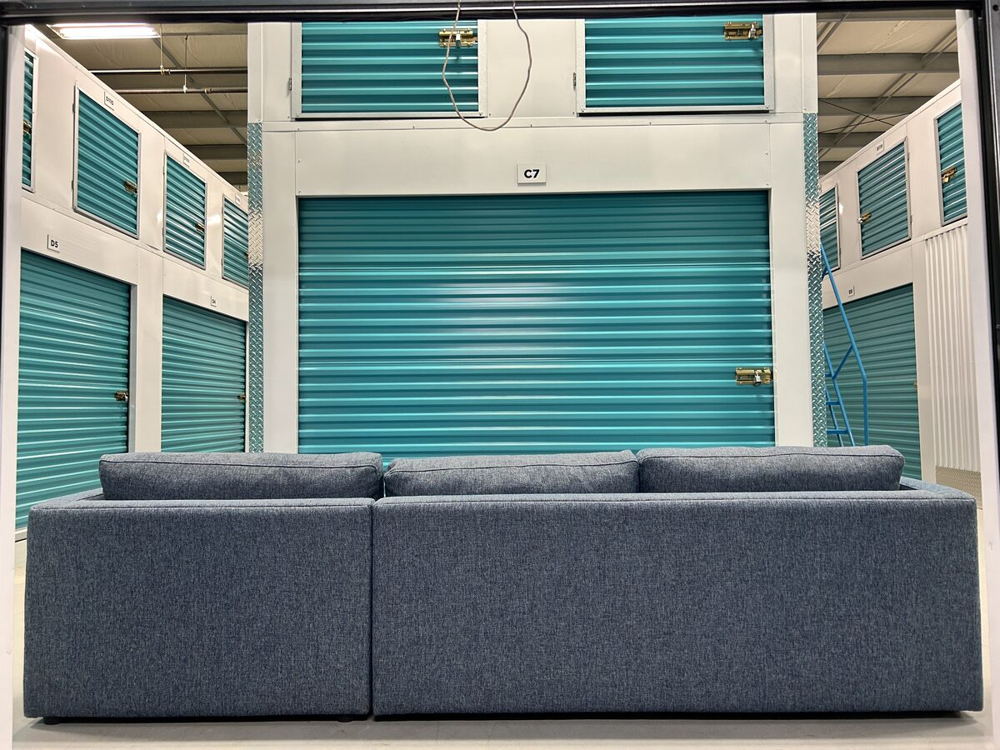
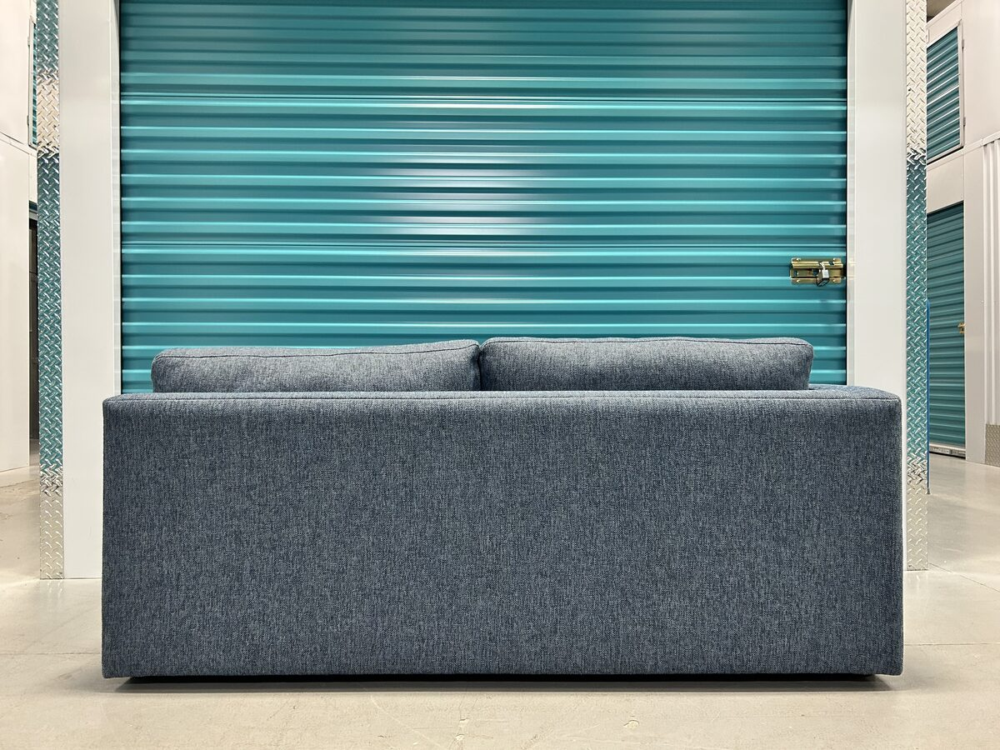
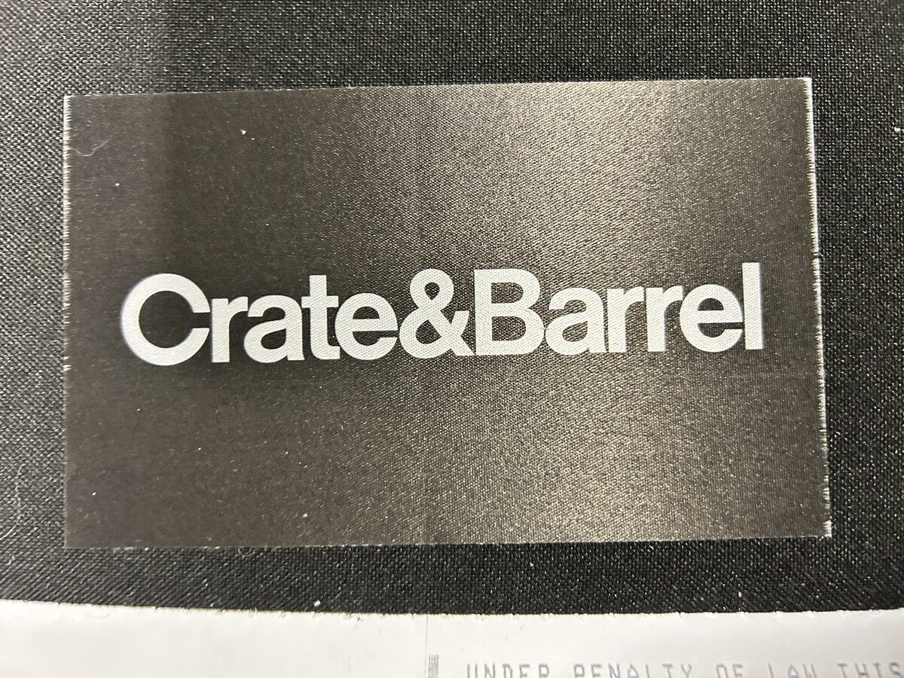

Aris 2-Piece Bench Sectional with Right-Arm Chaise — Thrive Ink
The Aris is a Crate & Barrel exclusive — a two-piece sectional built from a left-arm sofa and a right-arm chaise that join into a right-facing L. Each module carries a single uninterrupted bench cushion, so there is no centre gap down the seat, and the chaise runs 69 inches deep for full-length lounging while the sofa module stays at 37.5. The cushions are feather-down-wrapped foam over an FSC-certified hardwood frame, upholstered in Thrive Ink: a solution-dyed olefin basketweave in a deep heathered blue-slate, rated for pets and kids and GREENGUARD Gold Certified. We acquired this one from the Spruce Village area of Spruce Grove; manufactured in March 2023 and kept in a single home, it came to us in excellent condition with both bolster pillows and the original Crate & Barrel label intact.
If you have an Aris or a similar Crate & Barrel sectional you’re thinking about selling, we buy Crate & Barrel directly — no listing, no waiting. Our team handles the full, specialized in-home removal and transport.
Description
The Aris is a two-piece sectional — a sofa module and a right-facing chaise module. The bench-style seat cushion runs uninterrupted across the sofa, so there are no seams between cushions and fewer places to lose your keys. The chaise module is 69 inches deep for full-length lounging; the sofa module is 37.5 inches deep. Both use the same feather-down-wrapped foam cushions over a hardwood frame, in Crate & Barrel's Thrive performance fabric.
Features
- Hardwood frame, FSC® Certified — wood sourced from forests certified as responsibly managed
- Polyfoam core seat cushions wrapped in a feather-down blend
- Back cushions of polyfiber blend encased in polyester sheeting
- Thrive performance fabric in Ink — 97% olefin, 3% polyester textured basketweave, woven in the United States
- Solution-dyed olefin — resists staining and fading, cleans easily, holds up to pets and kids
- GREENGUARD Gold Certified for low chemical emissions
- Bench seats — one uninterrupted cushion per module, so there is no centre gap down the seating surface
- Two bolster pillows included
- Right-arm chaise, left-arm sofa — chaise on the right as you face the piece
- Made in USA of domestic and imported materials
Condition
Includes
All designer pieces are inspected for construction, materials, and manufacturer consistency before listing.
Frequently Asked Questions
Is this an authentic Crate & Barrel Aris sectional?
Yes. The original woven Crate & Barrel label is still attached to the frame — it is the last photo in the listing, shown alongside the factory law tag. The Aris two-piece sectional is also a Crate & Barrel exclusive, meaning it is not sold through any other retailer. Every designer piece we list is inspected for construction, materials, and manufacturer consistency before going up.
Which side is the chaise on?
The right, as you face the piece. The configuration is a right-arm chaise paired with a left-arm sofa, so it forms a right-facing L. The two modules are handed and cannot be swapped to put the chaise on the left.
What is the Thrive Ink fabric like?
Thrive is one of Crate & Barrel's performance fabrics — a textured basketweave where a heathered warp and a bouclé yarn create noticeable tone variation up close. Ink is a deep heathered blue-slate. The blend is 97% olefin and 3% polyester woven in the United States; olefin is solution-dyed, so it resists staining and fading and cleans easily, which is why it is rated for active, pet-friendly households. It is also GREENGUARD Gold Certified for low chemical emissions.
What are the exact dimensions?
The sectional is 109 inches wide and 31.25 inches high at the frame, or 32.5 inches measured over the back cushion. The 69-inch overall depth is measured across the chaise; the sofa module is 37.5 inches deep, so only the chaise end carries that deep footprint. Measure your doorways and any turns before delivery day: the piece comes apart into two modules, which makes it far easier to move than the overall dimensions suggest.
How old is it?
It was manufactured in March 2023, so it is a current-generation Aris rather than an older discontinued version. It has been in a single home since and is in excellent condition.
Do you deliver?
Yes. We deliver throughout Edmonton and surrounding areas, and we arrange delivery across Alberta on request. Delivery is offered for an additional fee that depends on distance and access.